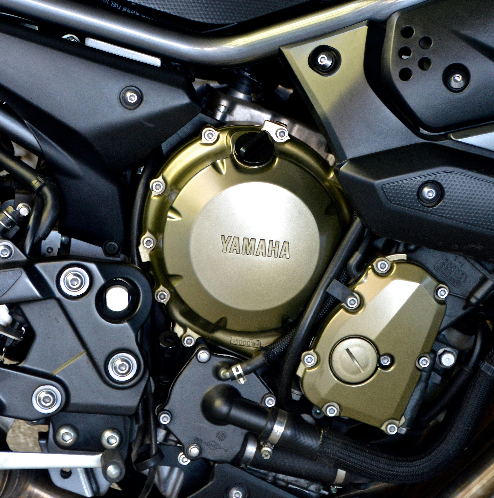

Motorcycle-focused
The website and customer journey now reflect the work the business wants to be known for: motorcycles.
About Salopian Motorsport
Salopian Motorsport is an independent workshop in Shrewsbury built around motorcycle maintenance, repair and fault finding.
The approach
Motorcycles are now the focus of the business. The aim is to provide a straightforward place for riders in Shrewsbury to bring routine servicing, repairs, tyres, electrical problems and more involved mechanical work.
All makes and models are considered. If a job is outside the work we can sensibly take on, we can simply say so before an appointment is made.
The workshop operates by prior appointment so time can be planned around the motorcycle and the work required.

What matters
The website and customer journey now reflect the work the business wants to be known for: motorcycles.
The main catchment is Shrewsbury, with the workshop based in Bicton.
Broad motorcycle work is considered, from servicing and tyres to diagnostics and engine repairs.
Home visits
Depending on the job, a home visit may be possible by prior arrangement. We will confirm whether the work is suitable before agreeing anything.
There is no emergency roadside call-out or recovery service. For a stranded motorcycle, arrange suitable recovery first.
Need help with your bike?
Send the bike details and what you’re experiencing. We’ll review the enquiry and contact you to arrange the next step.